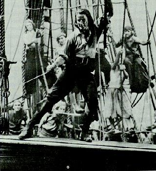

Schumpeter extolled the entrepreneur - that class of man and woman Buckminster Fuller would call 'pirates.' Whether entrepreneurs are a class of pirates or pirates, a class of entrepreneur, or identical, is left up to the reader. But there are certainly similarities. Pirates were adventurer types, sometimes scandrals, endowed by a wealthy king or queen to go forth and do battle with other pirates in risky and sometimes profitable adventures - usually involving trade and a subjugated peasantry. Kingdoms have since been replaced by corporations, adventures with ventures, and pirates, profiteers. The peasant, some would argue, have been replaced with temporary labor.